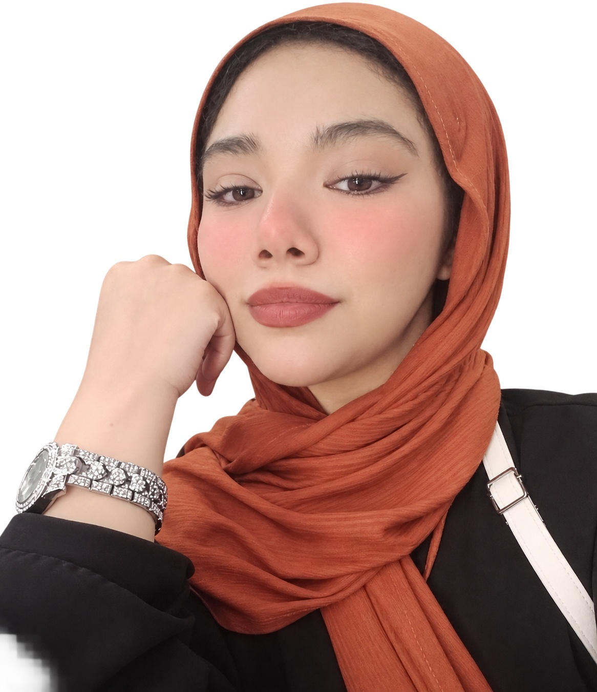
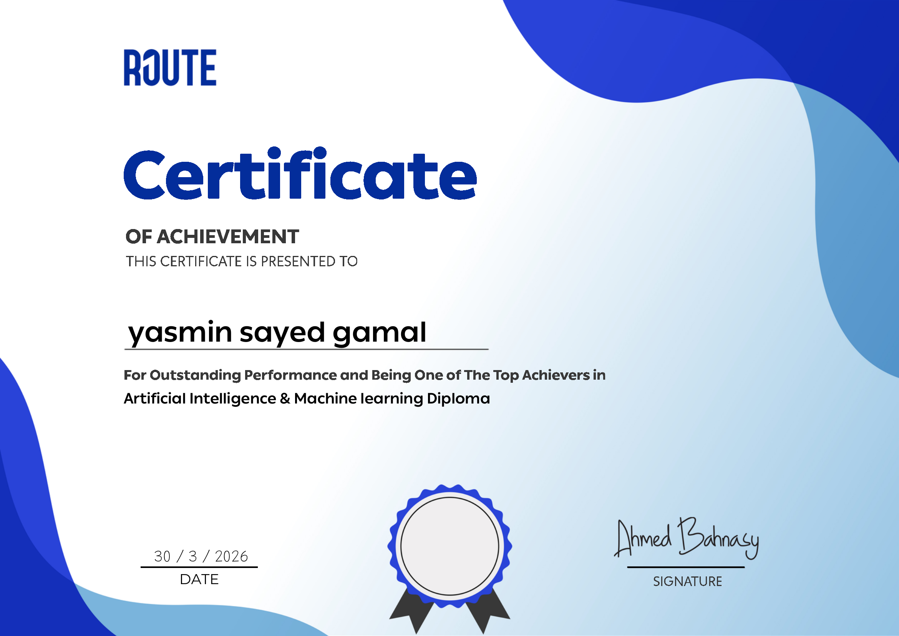

I build intelligent systems and extract data insights through predictive modeling, Computer Vision, and Natural Language Processing.

Computer Science student turning data into working, evaluated models.
I'm a Computer Science student at Culture and Science City and an AI & Machine Learning Trainee with the Digital Egypt Pioneers Initiative (DEPI), after completing Machine Learning training at Route. I work hands-on across the full pipeline — data preprocessing, model development, training, and evaluation — using Python, TensorFlow, NumPy, Pandas, and Matplotlib, with real projects in Natural Language Processing and Computer Vision.
I'm currently looking for an AI & Data Trainee opportunity where I can apply what I've learned to real, data-driven problems and keep growing in the field.
The tools and libraries I use across ML, CV, and NLP work.
Practical, client-focused support across the machine learning workflow.
Cleaning, structuring, and preparing raw datasets for reliable model training.
Building and tuning ML/DL models, from classic algorithms to CNNs and transformers.
Sentiment analysis and text classification pipelines using models like DistilBERT.
Image classification and object detection pipelines using OpenCV and YOLOv8.
Validation, performance metrics, and clear reporting on how a model actually performs.
Turning raw data into visual, understandable insights with Matplotlib and Seaborn.
Real projects covering the full ML workflow — from raw data to evaluated models.

Certificate of Achievement for outstanding performance and being one of the top achievers in the Artificial Intelligence & Machine Learning Diploma.
Issued by Route
Open to AI & Data Trainee opportunities, and always glad to talk about data-driven projects that solve real problems.